Dungeon Mole Dev Logs
This is a collection of my weekly development updates for Dungeon Mole. The game was developed as my Capstone project for Game Studio Production at Columbia College Chicago. I have been the main designer and programmer for this project so much of my tasks were related to creating and desinging gameplay elements along with communicating with a team of artists to create assets for the game. Each week we would post on a Microsoft Teams page what we were working on, and then a follow up before we met the next week. We are currently 15 weeks into production and expect to ship in May 2025.
Week 1 and Earlier: The Prototype
Once I pitched the project we had 3 artists; Evelyn a concept artist, Larry a 3D modeler, and Kyle a general artist. Oliver who was another programmer in the class also had an interest in the project, yet also still wanted to work on his own game idea.
As a result we had 2 teams formed, one for Dungeon Mole, and one for Olivers project "Arcana Forge". While Oliver and I mostly stuck to our own projects since we were the only programmers for each respective game, the three artists would bounce between projects as was needed. However, Oliver did come in to assist every now and then when I was dealing with things outside the class.
You are a Gardening Mole seeking to protect his garden home from the underground insect threat. While you cannot attack on your own, you can plant defenses throughout the underground dungeon to defend and destroy enemy defenses. But be careful, the insects will make large pushes on the exit every so often, so make sure you head back to defend before the next wave arrives. Explore the dungeon to find many unique seeds, discover powerful plant combos, and defend the garden from insect annihilation!
Week 2: Transition Prototype to 3D
Specific things I'm aiming to get working for this week:
Basic Test Room
Working Player controller
Getting Slingshot plant working
I'll be creating the repo and project file on Tuesday once I figure out what version of unity we should use.
This is what I got so far in terms of the 3D prototype. Just have movement, basic camera, and the sling working in the 3D environment. Wanted to also get the root wall plants but had an idea to make them grow out and cover more ground so I'll need some more time to get that working
Week 3: Basic Enemy AI
Heres the current state of the prototype, got the root wall plants working and reworked them so they can grow in the 4 cardinal directions like a snake. I also have enemy pathfinding and spawners working, will need to rework to stop spawning after they have enough enemy's on the field. Next focus is probably going to be getting the planting working with some sort of UI element to select what seed to use
Week 4: Finish Prototype for first Milestone
This is the current state of the project. Got the planting system working but could use some refinement down the line when it comes to the tile selection system. Also not fully committed to using unity grid maps to place dirt, but is the best solution I have currently found
Week 5: Aiming Plants
Got aim working as a component we can add to stuff like plants to render an aim icon. Currently has two modes: Linear and Grid. Linear shoots a straight line from its origin in the given Aim direction, while grid highlights the grid tile at the aim position. It can pretty easily be added to plant scripts so this should be easy to add to stuff down the line
*Note: Weeks 6+7 I was busy working on Corner Store Lobotomy so no videos were made*
Week 6: Digging up Plants and Managing Seeds
Week 7: Enemy Wave System and Catching up on last weeks task
Due to scheduling issues outside of school, I was not able to complete last weeks task, so in addition to the wave system, I will be also implementing the inventory system and seed distribution.
Week 8: Designing Battle Economy / Adding in Fertilizer Powerup
Current Idea:
In each room there will be mineral deposits scattered around the room, these can be mined to gather a fertilizer that can be spent to power up the plants you have out on the field. These deposits can be chipped away at, rather than mined all at once. As the player chisels at it, pieces will break off that the player can pick up, but over time the deposit will shrink and eventually run out, forcing the player to look for other deposits. The fertilizer can be used on a "per-plant" basis, meaning that fertilizing a plant will only affect that single instance of that plant. For example, if I have two projectile plants and I fertilize one of them, that one will be powered up while the other projectile plant will not. Fertilized plants will have better stats, range, or even special abilities, and will remain powered up until they are dug up. The idea behind this is that the player will walk into a room, be drawn to the nearest mineral deposit, throw up some basic defenses, and start digging away at the deposit while fighting off the early weak waves of enemies. After they build up enough fertilizer from the deposit, they will start powering up their plants to make a push and attack the enemy spawners.
This will take multiple weeks to fully execute, but this week will be mainly focused on adding the mineral mining mechanic, tracking how much the player has gathered, and giving the player the ability to use this on the plants (Plant evolutions will come later).
- Plants can now be dug up to get back their seed
- Item drops that the player can pick up when near
- Mineral deposits that the player can mine with their shovel to gain fertilizer, but will eventually run out
- Reworked inventory system to work off Scriptable Objects
Next week will revolve around getting the plant power up system working where the player can use fertilizer to powerup their plants. Next play test will be focused on seeing if the players will actually build bases near the fertilizer deposits and how effective the loop of "Set up, mine, push/attack, repeat" really is
Week 9: Plant Upgrades w/ Fertilizer (Also UI updates)
I will also be adding in the new UI elements that Evelyn is making this week and making sure it updates as their values change (Health hearts decrease, item icons swap around, etc.)
Week 10: Fix and Iterate on major Play test finds
Since I was not present for the play test on Friday I want to organize my own play test session next week where I can see first hand how players are interacting with the game world. I want to refine the current prototype just enough to the point where I can gather accurate data without bugs or performance issues being in the way.
From my investigations on some of the bugs listed in the notes doc, we have some issues with how we are using the imported room model. First thing I noticed is that when we use the mesh collider, it sometimes auto generates in a way that literally cuts corners. I included a picture of how this shows up, with the dark blue lines outlining the mesh, while the red is the autogenerated collider based on the mesh. Along the same lines, I discovered the issue where the player clips through the floor on the sling is a result of the player clipping into the room collider and going right through due to the dirt areas having a slightly raised section with the dirt layered on top. This also interferes with the enemy AI as the nav mesh cant always navigate onto that
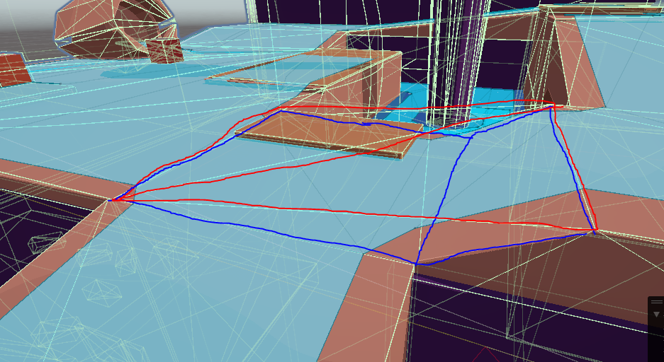 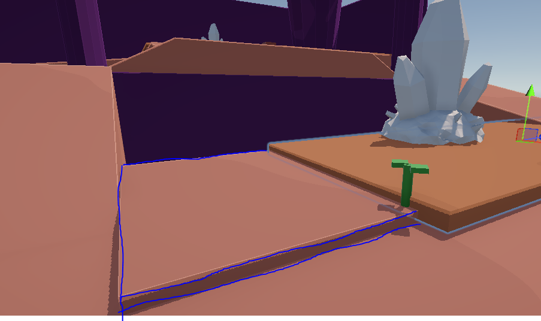
This is not on the fault of anyone, but I think we do need to change up our strategy to make sure we are in control of the colliders. Going forward the room mesh and the colliders of the room object should be separate objects that share a parent obj like the enemies and player objects. I know we haven't had a defined plan for level design and how that workflow will look like, but with some of the major features almost in place, I think we should start planning for that. For Friday I'm going to try and grey box a new smaller room that is designed with the newer mechanics in mind. From there I want to see how easy it would be to separate the grey box mesh from its colliders, see if we can export those meshes to Maya for Kyle and Larry to model over, then export that back into Unity. If everything works out we should be able to keep grey box collisions to use in the final room model to save on time, and keep the geometry simple and in our control.
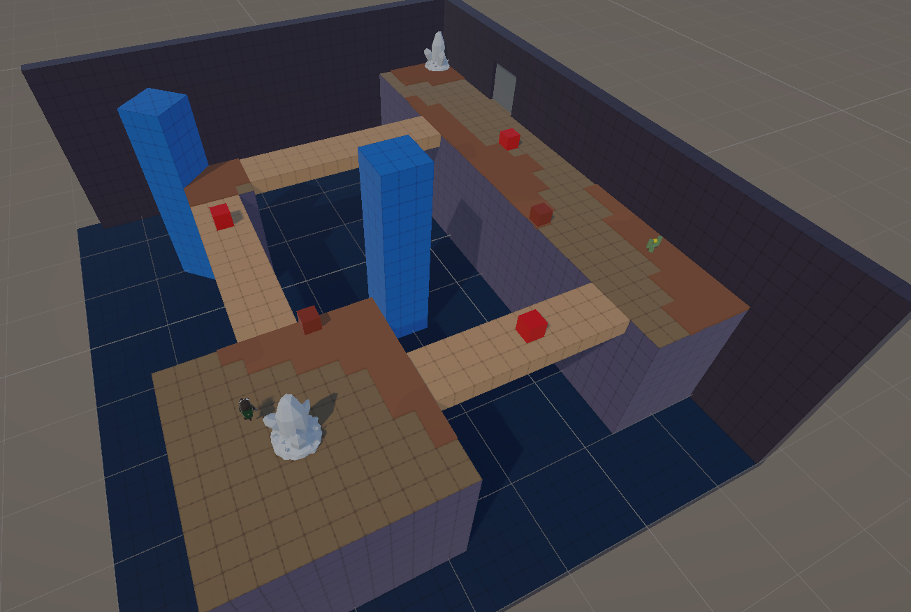 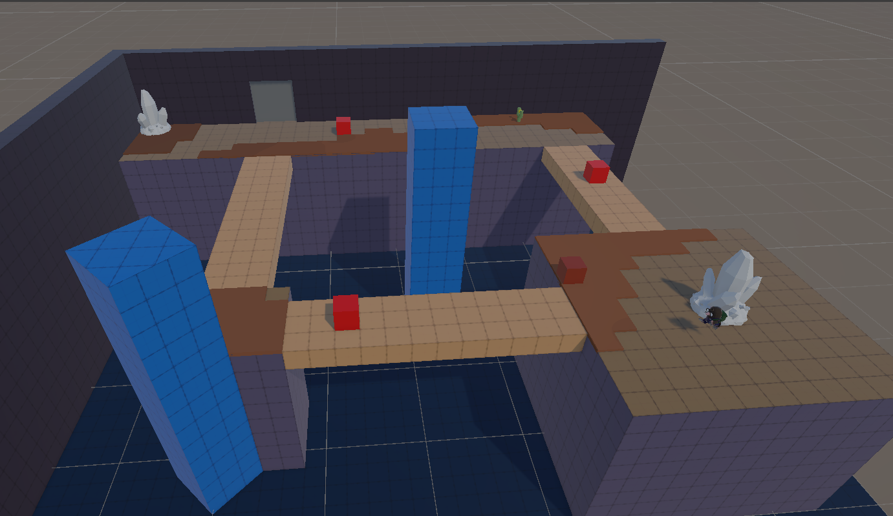 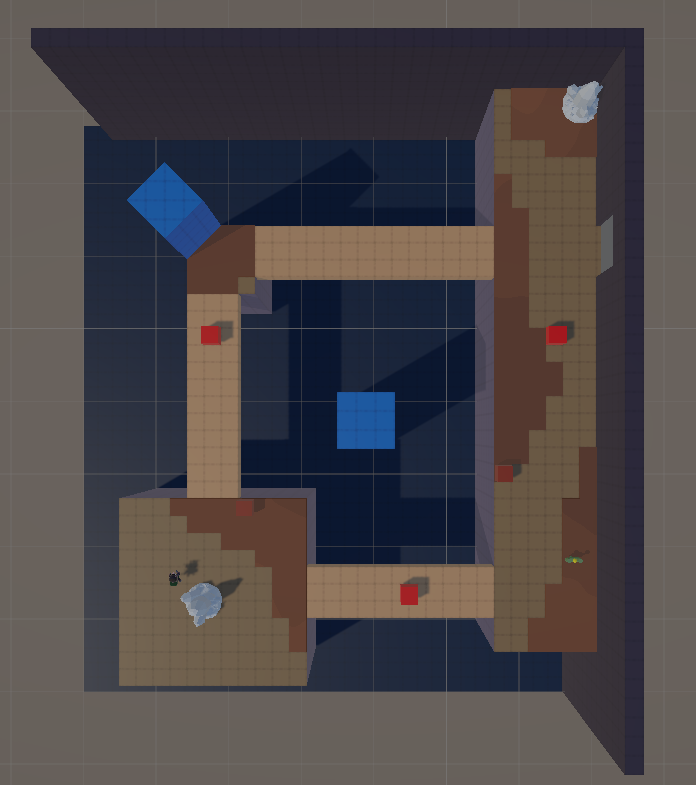
 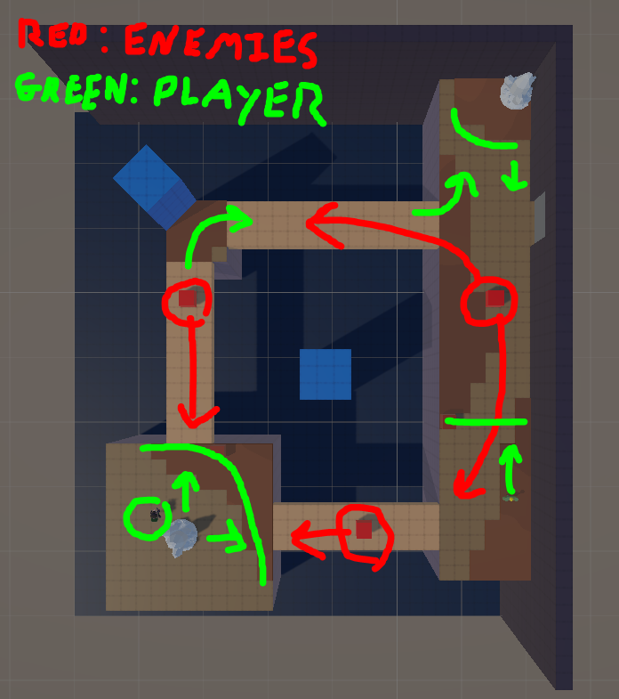
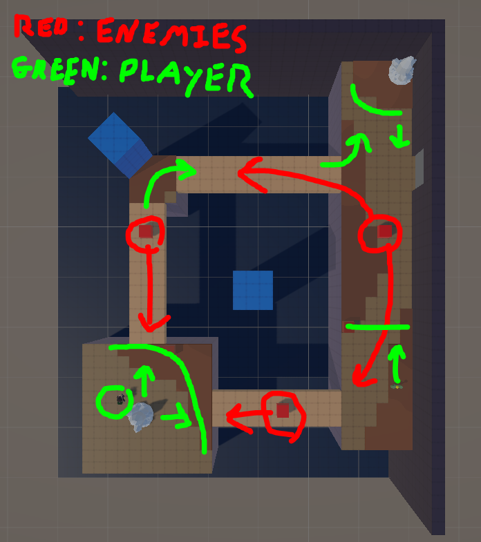
Week 11: Simplify Inputs, Reactionary UI, and Tutorialization
Heres my weekly demo video. Main things to take note are the Ui changes, the player aim reticle, and the input changes
UI Changes
- Selected items pops out when swapped too next and previous item slots are greyed out to be less noticeable and show they aren't immediately ready to use
- Fertilizer counter pops out when value changed
Aim Reticle
- A semi transparent arrow is now positioned infront of the player to show what they are aiming at and what action they are about to perform
- when an interactable object like a plant or mineral deposit is infront of the player, the reticle arrow will snap onto the top of that object based on its center
- All actions bound to either A or B on the controller (see main post for the positive and negative input explanation) and changes depending on what the player is or isn't selecting
- The dig action has been changed from an item to the B button option for any object that it is applicable too (ie. plants or minerals)
- Fertilize is still a seperate button however, and is bound to the trigger. This may change to be the A button action for the sprout stage of plants if the plant evolution method is changed or removed.
*Note: Here I mention the Columbia College Gala which was a showcase event held at the College that featured student work and Dungeon Mole was one of the works featured*
Week 12: Input Command UI and Highlight Reel
- Selecting an object will display the commands the player can make and their respective button
- Selecting a plant will show a dial that indicates how much fertilizer it needs until it evolves to the next stage
- When the player picks up an item, a sprite will pop up above the player that shows how much they have gained (+1)
I will also be working on a short 30 - 60 second long high light reel for the Columbia Gala, showing off the game and it's current state. Since the dead line on that is 12/1 I will be working on that first and thus will probably not include some of the features listed above. However the UI additions are not for visual aesthetic, rather more so just instruction for the actual Gala event so I'm not too worried.
Week 13: Ready build for Gala (Tutorial Level + Visual Input Commands)
Tutorial Room
This room will be where the player spawns in and learns the mechanics of the game. Basic progression is 1) Teaching the player how to dig fertilizer. 2) Teaching the player how to use fertilizer on sprouts to grow them. 3) Interacting with plants to attack targets. 4) Digging up plants and replanting them. My goal is to use as little text as possible to communicate the mechanics, just visuals and level design.
Visual Input Commands
I've been wanting to get this working in the game for the past few weeks but have been a bit stuck in how to go about implementing it. Ideally I would like these UI elements to be entirely iconography rather than using text by having a symbol representing the action and the button it is tied too ( / ). Main issue is that getting all of those action visuals designed will take some time and I feel like using text would be the safer option for the Gala build. I will be creating an asset list for the artists soon so I will be including those icons to use down the line.
Here is the tutorial level for the gala demo I made, people seemed to like it and more people were able to get the hang of the mechanics and controls.
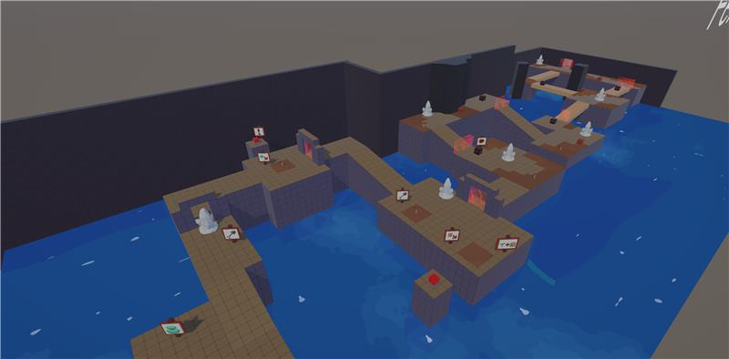 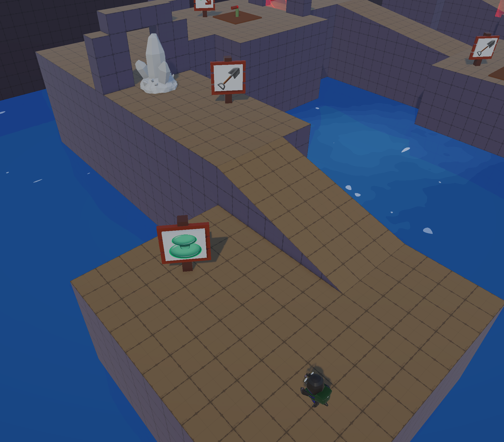
- Should probably teach players how to plant before showing them how to interact with them. Had a lot of points where players would walk up to the first plant and press B to dig up the plant, and then were confused on what to do next.
- players were overwhelmed by the spike in difficulty once enemies are introduced, probably will make the first hive or two only spawn one enemy to help players adjust
- Second challenge with the hive was a bit hard to teach players, as the only solution was to plant a shooter and turn it in such a way to bounce off a slanted wall. Good puzzle, but probably not the second one to show the player
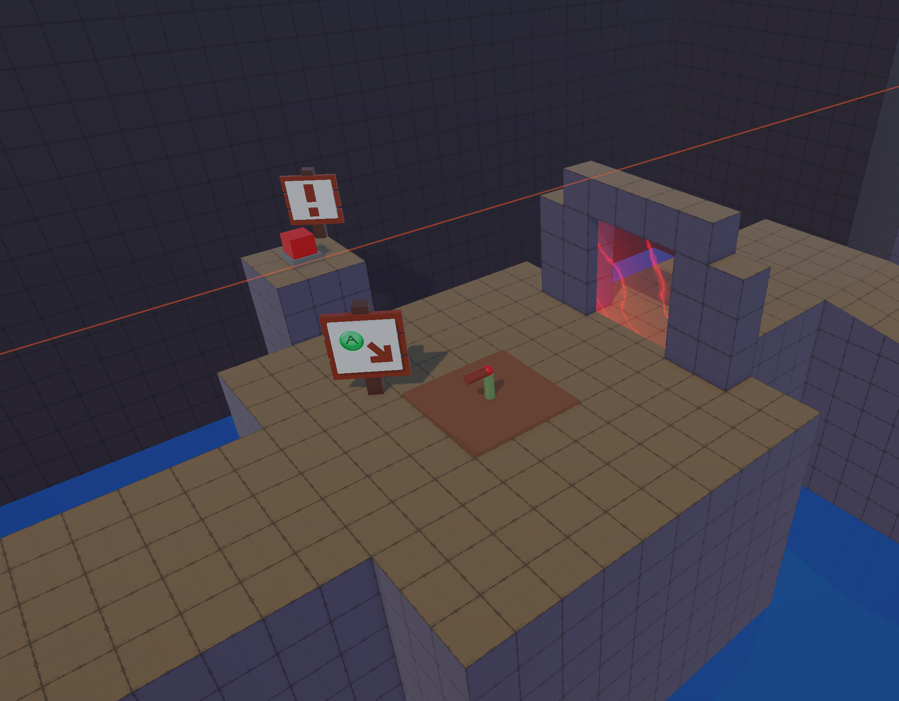 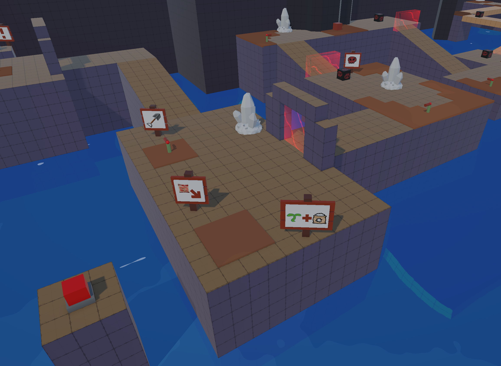
Week 14: Final Polish and New Build
Week 15: Half Way Point Reflection
This was my first time leading a team of this scale and having to figure out how to effectivley manage my time, and the time of my team mates. There were also a handful of disruptions this semester, like spending the most of weeks 6 and 7 working on Corner Store Lobotomy, attending MDEV on the day our second milestone was due, and basically having the third milestone done 2 weeks early to be ready for the Columbia Gala.
I am very greatful for the team I got to work with on this process, everyone has put in a lot of work and has been amazing to work with. Our artists Evelyn, Kyle, and Larry have all really made this idea come to life and have really brought a lot of excitement to the project, and Oliver has been a great source of advice and has really helped me shape the design of this game.
Speaking of which, this game has been a real design challenge when it came to figuring out the core gameplay and how to effectively teach players gameplay mechanics. A lot of the past 7 weeks have been devoted to this and thus is why there wasn't many new art assets. I had a lot of trouble figuring out how to define my basic core gameplay loop and identity of the game. Some of the original ideas were scrapped or put on hold like the floor timer and slingshot plant, but from that emerged a much stronger core system. Thats why I feel like the next 15 weeks of development are really going to be focused on expanding on this core gamplay and having a lot of fun making new plants, levels, enemies, and much more! We also have a sound team who will be working to get sound effects and music made for the game which is really exciting!
To sum it all up, this has been a challenging stretch. But now I feel like the project is set up to really take off in this second half of development and a lot of the early design work is going to pay off.
Week 16 pt. 1: Create Art + SFX Asset lists for Milestone 4
For the art asset list, I want to have this all within its own spreadsheet to keep it all centralized for that team, and also since the artists aren't working in GitHub until near the end of the assets creation. However this will not replace GitHub Issues. From my experience from the last few semesters in studio, the GitHub issues are a good way to track what people are actively doing on a week to week basis. This asset spread sheet would be more so for planning out long term production, having something that people can pull from and then bring into GitHub as we reach each milestone. I did some research to figure out a good format, and found a good example from Joshua Bresler on Art Station that seems to fit the timeline of the class structure that I will be referencing.
For the Sound Effects list, I did speak with Dani about how that will be formatted, since they have already started production so I will be in communications with them about how to format it.
Right now I want to focus on the goals for Milestone 4, which I feel should be focused on honing in our aesthetic styles. Safe bet would be just have the demo but with refined art assets, no grey boxing, models for plants, and some core sound effects, but I would like to still showcase some new gameplay features or levels if we can get them done in time.
This is most of what I want to see for the first milestone, starting to showcase the visual style of the game in the scope of the last demo. I'm going to speak with the artists on how to best plan this out and if there are any other assets we need to add. I'll be continuously updating this doc through out the semester, but this will be the only post I make for it.
Week 16 pt. 2: Rework Wall Plant
Over the break was thinking a lot about peoples reactions to the bouncing projectiles, and the puzzles that formed from that. All of those puzzles used diagonal walls naturally found in the level, but I realized that the player should have some way to set up diagonal walls to create their own projectile paths around obstacles. However the main issue with this idea was how do you set up a diagonal line in a square grid? I had ideas for dedicated plants that took up one tile but had a diagonal edge, but felt like that would be hard to effectively hit and set up. But then I came back to the idea of the sling shot plant and came up with this idea:
The main idea is that it takes the aiming concept of the sling shot and lets the player grow the wall out in the direction in one go. This idea would theoretically be quicker, and easier to learn than the original wall growth pattern. However unlike the sling shot aiming, I want this to be restricted to 8 directions as this will make it really easy to set up projectile bounce paths and make it easier to predict what tiles will be considered "open" to planting. Since I want each end of the wall to land on the center of a tile, the length will vary between diagonals and cardnal directions, but I want to try and aim for the wall to jut out ~3 tiles from the main body.
I also had the idea of having the growth animation also deal damage to enemies that are in the way, creating kind of a pseudo melee attack, giving the wall this duality both as a defense plant and an offensive one in a pinch. I also want to create a aim reticle for this similar to the line renderer but not as long
Week 17 pt.1: Updating the Input Action UI
- When the player grows a plant the UI doesn't change to the plants control scheme
- Each control scheme is hard coded in and difficult to expand upon for specific scenarios
- A fertilizer tracker that appears above a plant to show how much it needs to grow. This would most likely be a dial like indicator that fills up as it gains fertilizer
- Enemy Spawner Trackers that appears above each active hive on the screen, and when there is an active hive off screen it will stick to the edge of the screen and point in the direction of the spawner
Video here
Week 17 pt. 2: Aiming with the Right Stick
put video here
I also briefly showcased and talked about some updated I made to the fertilizer dial to make it a bit easier on the eyes. TLDR; Going to have the dial fade away when the player is far away and then become full size when they are near.
One other small thing to keep in mind is that I did add the timer to the test projectiles so they will be destroyed after about 4 seconds of being in the air since someone mentioned that last week.
Week 18 pt.1: Enemy Barriers
First up is getting the enemy barriers set up as their own prefab object. So far the barriers have worked by just having them as a child object of the Hives that are destroyed when the Hive dies. However it was pointed out that this limits us to only having one Hive per challenge, and people did have ideas for having multiple hives in a section to create danger from different directions. So I want to go ahead and make it its own object with behavior script to add more flexibility to the gates. I have also been told that the sounds for said gate are made so hopefully after this week we would just need the final model and its good to go
put video here
Week 18 pt.2: Extra Sources of Fertilizer
- Enemies and Hive's drop fertilizer on death
- This felt like a pretty popular idea within the group, however this does have some potential holes. While the enemies can spawn from hives forever, creating a theoretical infinite source of fertilizer, if the player has no defenses then they won't be able to kill the enemies to drop the fertilizer.
- Big Fertilizer Deposits Regenerate
- The idea with this one was that bigger fertilizer deposits, or at least some sort of variant of them can regenerate at a very slow rate. This could be something to pair with the enemy drops to avoid the aforementioned soft-lock situation, however we didn't like the idea of a player sitting next to the fertilizer deposits just waiting for them to regenerate
- Smaller Scattered Deposits
- As a way to add some more details and guide the player to certain areas, it was suggested that we could have some more smaller fertilizer deposits that are more frequent and scattered through the level. This is similar to an idea I have had for small item crates scattered through out the level. Those crates would be kind of an analogue to Zelda pots, where occasionally they spawn a random item when broken. However, I personally don't like the idea of the player having to walk up each small little crystal and pressing B to dig them up, so I want to experiment with another solution. In Enter the Gungeon there are a lot of set dressing props (like crates, pots, chairs, etc.) that the player can run into and break. They don't drop anything, and other than blocking a single bullet they are pretty useless, but it is so fun to just run through them and break them! I had that idea for the item crates in this game and will most likely do the same with these small deposits
video here
Week 19 pt,1: Trailer for New Release and Itch Updates
Here are the Main features for this milestone:
- Sound implementation
- New levels focused on different mechanics
- New models for the enemy spawners (H.I.V.E.s) and item drops
- Refined Item drop animations and spawning
- UI improvements
Week 19 pt.2: Improve Visual Effects for Item/Resource Flow
Item Drop Animation + Delay
One thing I mentioned last week was wanting to improve the way the Item Drops behave in game. Currently their objects just spawn in at a position, and instantaneously disappear when near the player. From the start I wanted the drops to have more personality and animated, but when first implemented I was more concerned about making sure everything was working before the aesthetics, but this led to some confusion on where drops are coming from and where they are going. Main things I want to do is have the items be thrown out from their spawned position so they spawn with some movement, and also add a delay to the player picking it up from when it spawned, so the player can see the item drop before it is collected
Fertilizer Use
When the player is fertilizing a plant, I want there to be a visual line of fertilizer arch from the player, to the target plant. This will communicate not only the direction of fertilizer flow, but also the rate. Rendering the line in an arch might be a challenge but I am sure it is capable within Unity using line renderers.
Grid Visualization
While not necessarily a resource, I feel like better visualizing the world grid plays a part in this, since it's information that will help the player more efficiently use their resources. Up until now we have been using the Probuilder grids to visualize the world grid and calculate how things line up in gameplay, however probuilder textures aren't going to be making it to the final game, so I feel like it is time to figure out a good way of rendering that to the player in a way that isn't overwhelming or noisy. Could probably figure something out with shaders to make it only appear when the player is close.
video
Week 20 pt.1: Start Transitioning to Cell Shade Rendering for First Lighting Pass
video here
For now though this first pass was really interesting and switching everything over to toon shaders wasn't as hard as I thought. We do have some weird discrepancies going on, mainly having a Toon shader - Copy that some of the materials derive from which messed up their shading. That was the case with clays model, so after switching it over he looks a bit different, with flatter shading and an outline. Also small change, clays glasses have an unlit shader attached to them so they will glow in the dark!
One other think I should mention is that I turned on the pixel camera again, I believe it has been off for the past few mile stones, and for the time being it is going to be at HD resolution (1920p x 1080p) so we get some nice crisp edges on the pixels rather than anti aliasing blurring them together, more so an aesthetic touch.
Week 20 pt.2: See Player Through Walls
video
Week 21: Half Way Point Reflection
paint overs here
Credit to Evelyn Rodriguez
Here is the first version of the lighting I got set up to mimic the paint over. Leaning a bit darker just because I worry if it gets too bright people wont pick up on the cave vibe. However I feel like the crystals on the walls help outline the boundaries of the rooms so I think it can work. Had to fake some of the emission stuff by upping the bloom in post processing, and adding a light inside the crystals to get it to glow on the toon shaders. Also the spot lights now have volume but that is also a trick of just using a mesh. Definitely a simple and kind of hacky work around, but for the sake of time and lack of resources this will be the best strategy
image
Quick new pass, upped the fill lighting, made the volumes of the sky lights cylinders over cones to prevent them from looking like stage lights. Made the crystals smaller, worry that if we made them too small and bunch them together the overlapping lights will make it too bright so maybe we go for having larger ranged lights that cover multiple crystals?
Week 22 pt.1: Half Way Point Reflection
The rate and causation for losing fertilizer charge will be different depending on the plant. For example, the shooter will lose fertilizer at a constant rate over time, but the root wall should only lose it when an enemy runs into the wall and dies. This will most likely be implemented within the parent class for all plants, so this will be forwards compatible with future plants
video
Week 22 pt.2: Add Hostility Bar
image
Week 22 pt.3: Add in Animations to Hive
video
I tweaked the scripting to better line up with the animations and give a better view on the animations. I linked the first spawn to the drill up animation, however I don't have the spawn animation looping like you said. It could in theory, but the issue I had was what if we need to change the spawn rate away from one ever 2 seconds, or how does it stop when it reaches the spawn limit? Basically I just added a state where it is just the claw empty in a static state, and then when an enemy spawn request is made it goes down and grabs it. I'll probably come back to this at a later time to figure out a way to have the enemies "jump" off the top of the drill and onto the ground. Don't have time for it now since that would involve playing around with the physics and navmesh systems